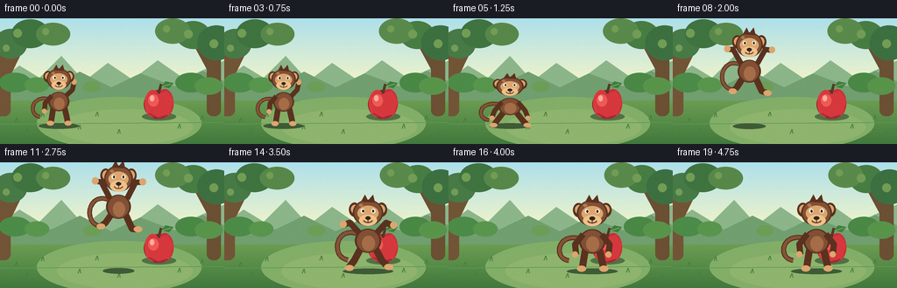
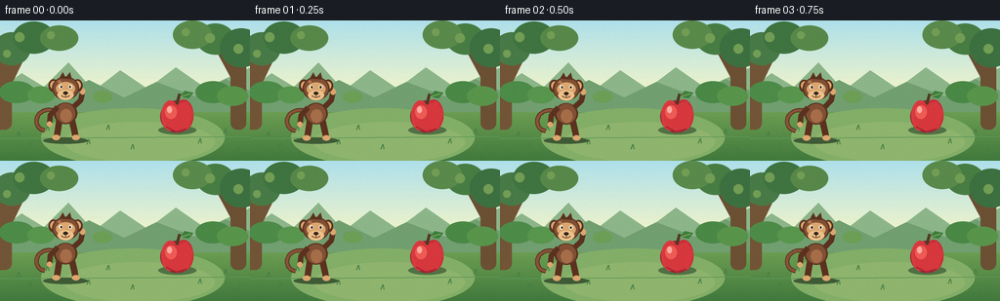

CODING AGENTS AS PIXEL WORLD MODELS
traex/GPT-5.6-Sol · dynamic_spatial_relationship_0056
点击播放 · 原生 RGB 像素
逐轮保存的候选
回放视频、检查图与代码变化。
每份候选均可单独播放。实际图片检查记录在下方工具轨迹中。
候选 01播放与检查图
点击播放 · 原生 RGB 像素


展开代码变化
--- 上一保存版本
+++ 本次保存版本
@@ -0,0 +1,274 @@
+from pathlib import Path
+import math
+import numpy as np
+from PIL import Image, ImageDraw, ImageFilter
+import artifact_io
+
+# Deterministic hand-illustrated 2D animation, rendered oversize for clean antialiasing.
+W, H, N = 256, 144, 20
+SS = 4
+rng = np.random.default_rng(56)
+
+
+def P(v):
+ if isinstance(v, (tuple, list)):
+ return tuple(int(round(x * SS)) for x in v)
+ return int(round(v * SS))
+
+
+def ellipse(d, box, fill, outline=None, width=1):
+ d.ellipse(P(box), fill=fill, outline=outline, width=P(width) if outline else 1)
+
+
+def polygon(d, pts, fill, outline=None):
+ d.polygon([P(p) for p in pts], fill=fill)
+ if outline:
+ d.line([P(p) for p in pts + [pts[0]]], fill=outline, width=P(1), joint="curve")
+
+
+def line(d, pts, fill, width=1, joint="curve"):
+ d.line([P(p) for p in pts], fill=fill, width=P(width), joint=joint)
+
+
+def rounded(d, box, radius, fill, outline=None, width=1):
+ d.rounded_rectangle(P(box), radius=P(radius), fill=fill, outline=outline,
+ width=P(width) if outline else 1)
+
+
+def bezier_points(p0, p1, p2, p3, steps=24):
+ out = []
+ for t in np.linspace(0, 1, steps):
+ u = 1-t
+ out.append((u**3*p0[0]+3*u*u*t*p1[0]+3*u*t*t*p2[0]+t**3*p3[0],
+ u**3*p0[1]+3*u*u*t*p1[1]+3*u*t*t*p2[1]+t**3*p3[1]))
+ return out
+
+
+def background(frame):
+ # Soft sky-to-grass gradient.
+ yy = np.arange(H*SS)[:, None]
+ arr = np.zeros((H*SS, W*SS, 3), dtype=np.uint8)
+ horizon = 72*SS
+ sky_top = np.array([174, 224, 235], float)
+ sky_bot = np.array([239, 244, 203], float)
+ grass_top = np.array([126, 173, 91], float)
+ grass_bot = np.array([65, 121, 61], float)
+ for y in range(H*SS):
+ if y < horizon:
+ t = y/max(1, horizon)
+ c = sky_top*(1-t)+sky_bot*t
+ else:
+ t = (y-horizon)/(H*SS-horizon)
+ c = grass_top*(1-t)+grass_bot*t
+ arr[y, :, :] = c.astype(np.uint8)
+ im = Image.fromarray(arr, 'RGB')
+ d = ImageDraw.Draw(im)
+
+ # Distant hazy hills.
+ polygon(d, [(-5,74),(22,54),(45,68),(70,43),(96,72),(123,51),(151,70),(180,48),(210,69),(261,46),(261,88),(-5,88)],
+ '#8db58a')
+ polygon(d, [(-8,81),(28,66),(58,77),(91,61),(127,79),(160,63),(200,78),(231,60),(264,76),(264,94),(-8,94)],
+ '#719f70')
+
+ # Framing orchard trunks.
+ rounded(d, (-7,20,12,112), 7, '#725536')
+ polygon(d, [(3,52),(26,21),(32,24),(13,63)], '#725536')
+ rounded(d, (236,24,252,112), 7, '#6b5033')
+ polygon(d, [(243,48),(222,19),(217,23),(238,62)], '#6b5033')
+
+ # Canopy clusters, with tiny sway.
+ sway = math.sin(frame*.28)*0.7
+ clusters = [(-7+sway,12,31,46),(13+sway,1,56,34),(41+sway,5,80,31),
+ (201-sway,3,240,35),(225-sway,8,269,48),(177-sway,0,217,29)]
+ colors = ['#477a46','#3f7440','#588849','#477d43','#3d7040','#5a8a4b']
+ for b,c in zip(clusters,colors):
+ ellipse(d,b,c)
+ # Light spots in foliage.
+ for x,y,r in [(20,17,5),(52,15,4),(7,34,4),(215,18,5),(244,29,5),(190,12,4)]:
+ ellipse(d,(x-r,y-r,x+r,y+r),'#729d55')
+
+ # Midground bushes.
+ for x,y,r,c in [(17,73,18,'#4d8b48'),(42,76,14,'#58964e'),(218,73,18,'#4a8846'),
+ (238,77,16,'#59944b'),(105,78,10,'#6c9e56')]:
+ ellipse(d,(x-r,y-r*.6,x+r,y+r*.65),c)
+
+ # Ground bands and a warm sunlit oval around the action.
+ ellipse(d,(42,90,230,150),'#83ae67')
+ ellipse(d,(65,104,220,145),'#8fb46d')
+ line(d,[(0,121),(256,119)],'#5d9858',1)
+ # Small grass strokes, kept understated.
+ for x,y in [(19,119),(31,130),(49,113),(91,127),(111,112),(136,132),(205,126),(231,116),(244,134)]:
+ line(d,[(x-2,y),(x,y-5),(x+1,y)],'#477f45',1)
+ return im
+
+
+def draw_apple(im, frame):
+ d = ImageDraw.Draw(im)
+ # The apple remains fixed: a clear landmark the monkey moves relative to.
+ cx, cy = 181, 99
+ # Ground contact shadow.
+ ellipse(d,(162,108,201,117),'#507245')
+ # Soft apple silhouette / dark rim.
+ ellipse(d,(164,82,198,115),'#8f2530')
+ # Lobed red body.
+ ellipse(d,(165,82,183.5,113),'#d93c40')
+ ellipse(d,(178,81,198,113),'#c92f38')
+ polygon(d,[(167,94),(170,110),(181,115),(193,111),(198,94),(191,83),(181,86),(173,82)],'#d6383d')
+ # warm lit cheek and darker lower edge
+ ellipse(d,(169,87,181,101),'#ee5b55')
+ ellipse(d,(171,88,176,95),'#ffaaa0')
+ line(d,[(170,109),(180,114),(191,111)],'#a82532',1.5)
+ # stem and leaf
+ line(d,[(181,86),(184,75)],'#523b25',3)
+ polygon(d,[(184,78),(189,72),(198,74),(193,80)],'#3e7e3f')
+ line(d,[(185,78),(195,75)],'#86ad57',1)
+
+
+def monkey_pose(i):
+ # opening tableau, anticipation, one readable jump, then a foreground landing.
+ if i <= 4:
+ x = 67 + math.sin(i*.75)*0.8
+ base = 121 + math.sin(i*.75)*0.5
+ return x, base, .92, 'idle', 0.0
+ if i == 5:
+ return 70, 124, .95, 'crouch', 0.0
+ if 6 <= i <= 14:
+ t = (i-6)/8.0
+ ease = t*t*(3-2*t)
+ x = 73 + (164-73)*ease
+ base = 119 - 41*math.sin(math.pi*t) + 3*t
+ return x, base, .98 + .17*t, 'air', math.sin(math.pi*t)
+ if i == 15:
+ return 164, 124, 1.16, 'land', 0.0
+ # settle in front of apple; tiny living motion
+ return 164, 123 + .45*math.sin((i-16)*1.3), 1.16, 'front', 0.0
+
+
+def draw_monkey(im, i):
+ d = ImageDraw.Draw(im)
+ x, base, s, phase, air = monkey_pose(i)
+ # local point and box transforms, with optional landing squash.
+ squash = .87 if phase == 'crouch' else (0.90 if phase == 'land' else 1.0)
+ stretch = 1.06 if phase == 'air' and air > .65 else 1.0
+ sy = s * squash * stretch
+ sx = s * (1.08 if phase in ('crouch','land') else 1.0)
+ def pt(px,py): return (x+px*sx, base+py*sy)
+ def box(a,b,c,e):
+ p1,p2=pt(a,b),pt(c,e); return (p1[0],p1[1],p2[0],p2[1])
+
+ # Scale-aware drawing helpers.
+ def ln(points, color, wid): line(d,[pt(*p) for p in points],color,max(1,wid*s))
+ def el(b, color, outline=None, wid=1): ellipse(d,box(*b),color,outline,max(1,wid*s))
+ def poly(points,color): polygon(d,[pt(*p) for p in points],color)
+
+ # Contact / airborne shadow gives the jump strong vertical readability.
+ ground_x = x
+ jump_height = max(0, 121-base)
+ shadow_w = max(12, 25-jump_height*.22)*s
+ shadow_y = 123 + (x-73)/91*1.5 if x > 73 else 123
+ ellipse(d,(ground_x-shadow_w,shadow_y-3,ground_x+shadow_w,shadow_y+3.5),
+ (63,91,54))
+
+ dark = '#5b321f'; fur = '#815035'; lightfur = '#a56d48'; face = '#dca66f'
+ face_hi = '#edc28a'; ink = '#35251d'
+
+ # Tail is behind the body and unmistakably monkey-like.
+ if phase == 'air':
+ tail = bezier_points(pt(-8,-34),pt(-32,-45),pt(-38,-12),pt(-20,-9))
+ else:
+ tail = bezier_points(pt(-8,-30),pt(-35,-39),pt(-39,-11),pt(-23,-9))
+ line(d,tail,dark,max(2,5*s))
+ line(d,tail,'#865438',max(1,3*s))
+
+ # Legs change pose through the leap.
+ if phase == 'air':
+ # spread/bicycle legs at the apex
+ ln([(-7,-21),(-14,-8-air*4),(-20,0-air*8)], dark, 7)
+ ln([(7,-21),(14,-8+air*2),(20,-2-air*4)], dark, 7)
+ el((-23,-4-air*8,-14,2-air*8),face)
+ el((16,-5-air*4,25,1-air*4),face)
+ elif phase in ('crouch','land'):
+ ln([(-7,-20),(-14,-9),(-18,-2)],dark,7)
+ ln([(7,-20),(14,-9),(19,-2)],dark,7)
+ el((-23,-5,-14,1),face); el((15,-5,24,1),face)
+ else:
+ ln([(-7,-20),(-9,-7),(-10,-1)],dark,7)
+ ln([(7,-20),(10,-7),(11,-1)],dark,7)
+ el((-15,-4,-6,2),face); el((7,-4,16,2),face)
+
+ # Pear-shaped torso.
+ el((-13,-40,13,-16),dark)
+ el((-11,-39,11,-17),fur)
+ el((-6,-33,7,-18),lightfur)
+
+ # Arms: raised while jumping, relaxed afterward.
+ if phase == 'air':
+ ln([(-9,-36),(-18,-46-air*7),(-24,-44-air*10)],dark,6)
+ ln([(9,-36),(18,-46-air*7),(25,-43-air*10)],dark,6)
+ el((-28,-48-air*10,-21,-41-air*10),face)
+ el((22,-47-air*10,29,-40-air*10),face)
+ elif phase == 'crouch':
+ ln([(-9,-34),(-17,-22),(-20,-12)],dark,6)
+ ln([(9,-34),(17,-22),(20,-12)],dark,6)
+ el((-23,-15,-17,-9),face); el((17,-15,23,-9),face)
+ elif phase in ('land','front'):
+ ln([(-9,-35),(-17,-25),(-16,-15)],dark,6)
+ ln([(9,-35),(17,-25),(16,-15)],dark,6)
+ el((-20,-18,-14,-12),face); el((13,-18,19,-12),face)
+ else:
+ # one friendly raised hand in opening tableau
+ ln([(-9,-35),(-17,-26),(-18,-16)],dark,6)
+ ln([(9,-35),(17,-43),(19,-52)],dark,6)
+ el((-21,-19,-15,-13),face); el((16,-56,22,-49),face)
+
+ # Head, ears, facial mask.
+ head_y = -53
+ el((-19,head_y-13,-8,head_y+1),dark)
+ el((8,head_y-13,19,head_y+1),dark)
+ el((-17,head_y-11,-9,head_y-2),face)
+ el((9,head_y-11,17,head_y-2),face)
+ el((-15,head_y-16,15,head_y+10),dark)
+ el((-13.5,head_y-15,13.5,head_y+9),fur)
+ # forehead tuft
+ poly([(-7,head_y-14),(-3,head_y-21),(0,head_y-15),(5,head_y-21),(7,head_y-13)],dark)
+ # pale face mask and muzzle
+ el((-10.5,head_y-10,10.5,head_y+5),face)
+ el((-9,head_y-1,9,head_y+10),face_hi)
+ # eyes (slightly aimed toward destination during opening)
+ el((-7.4,head_y-7,-3.2,head_y-2.5),'#fff7dd')
+ el((3.2,head_y-7,7.4,head_y-2.5),'#fff7dd')
+ el((-5.8,head_y-6,-3.8,head_y-3.2),ink)
+ el((4.1,head_y-6,6.1,head_y-3.2),ink)
+ # nose, smile
+ el((-2.7,head_y+0.5,2.7,head_y+4),ink)
+ ln([(0,head_y+4),(0,head_y+6)],'#75462f',1)
+ # smile arc as short polyline
+ smile=[]
+ for a in np.linspace(.15*math.pi,.85*math.pi,10):
+ smile.append((5*math.cos(a), head_y+3+4*math.sin(a)))
+ ln(smile,'#75412d',1.2)
+ # highlights for dimensional polish
+ el((-9,head_y-12,-5,head_y-9),'#b47a50')
+
+
+def make_frame(i):
+ im = background(i)
+ # Apple is deliberately painted before monkey, so final overlap unambiguously means "in front".
+ draw_apple(im, i)
+ draw_monkey(im, i)
+
+ # Gentle warm light vignette and subtle film grain.
+ small = im.resize((W,H),Image.Resampling.LANCZOS)
+ arr = np.asarray(small).astype(np.int16)
+ noise = rng.normal(0,0.7,arr.shape[:2])[:,:,None]
+ arr = np.clip(arr + noise,0,255).astype(np.uint8)
+ return arr
+
+
+def main():
+ frames = np.stack([make_frame(i) for i in range(N)], axis=0)
+ artifact_io.save(frames, Path(__file__).resolve().parent)
+
+
+if __name__ == '__main__':
+ main()
可观测工具轨迹
实际执行的命令与返回图片。
命令 1exit 0
/bin/bash -lc "cat prompt.txt && printf '\\n---RULES---\\n' && cat GENERATION_RULES.md && printf '\\n---SPEC---\\n' && cat task_spec.json"
命令 2exit 0
/bin/bash -lc "find . -maxdepth 2 -type f -printf '%p\\n' | sort"
命令 3exit 0
/bin/bash -lc 'cat artifact_io.py'
命令 4exit 0
/bin/bash -lc "cat > generate.py <<'PY'
from pathlib import Path
import math
import numpy as np
from PIL import Image, ImageDraw, ImageFilter
import artifact_io
# Deterministic hand-illustrated 2D animation, rendered oversize for clean antialiasing.
W, H, N = 256, 144, 20
SS = 4
rng = np.random.default_rng(56)
def P(v):
if isinstance(v, (tuple, list)):
return tuple(int(round(x * SS)) for x in v)
return int(round(v * SS))
def ellipse(d, box, fill, outline=None, width=1):
d.ellipse(P(box), fill=fill, outline=outline, width=P(width) if outline else 1)
def polygon(d, pts, fill, outline=None):
d.polygon([P(p) for p in pts], fill=fill)
if outline:
d.line([P(p) for p in pts + [pts[0]]], fill=outline, width=P(1), joint=\"curve\")
def line(d, pts, fill, width=1, joint=\"curve\"):
d.line([P(p) for p in pts], fill=fill, width=P(width), joint=joint)
def rounded(d, box, radius, fill, outline=None, width=1):
d.rounded_rectangle(P(box), radius=P(radius), fill=fill, outline=outline,
width=P(width) if outline else 1)
def bezier_points(p0, p1, p2, p3, steps=24):
out = []
for t in np.linspace(0, 1, steps):
u = 1-t
out.append((u**3*p0[0]+3*u*u*t*p1[0]+3*u*t*t*p2[0]+t**3*p3[0],
u**3*p0[1]+3*u*u*t*p1[1]+3*u*t*t*p2[1]+t**3*p3[1]))
return out
def background(frame):
# Soft sky-to-grass gradient.
yy = np.arange(H*SS)[:, None]
arr = np.zeros((H*SS, W*SS, 3), dtype=np.uint8)
horizon = 72*SS
sky_top = np.array([174, 224, 235], float)
sky_bot = np.array([239, 244, 203], float)
grass_top = np.array([126, 173, 91], float)
grass_bot = np.array([65, 121, 61], float)
for y in range(H*SS):
if y < horizon:
t = y/max(1, horizon)
c = sky_top*(1-t)+sky_bot*t
else:
t = (y-horizon)/(H*SS-horizon)
c = grass_top*(1-t)+grass_bot*t
arr[y, :, :] = c.astype(np.uint8)
im = Image.fromarray(arr, 'RGB')
d = ImageDraw.Draw(im)
# Distant hazy hills.
polygon(d, [(-5,74),(22,54),(45,68),(70,43),(96,72),(123,51),(151,70),(180,48),(210,69),(261,46),(261,88),(-5,88)],
'#8db58a')
polygon(d, [(-8,81),(28,66),(58,77),(91,61),(127,79),(160,63),(200,78),(231,60),(264,76),(264,94),(-8,94)],
'#719f70')
# Framing orchard trunks.
rounded(d, (-7,20,12,112), 7, '#725536')
polygon(d, [(3,52),(26,21),(32,24),(13,63)], '#725536')
rounded(d, (236,24,252,112), 7, '#6b5033')
polygon(d, [(243,48),(222,19),(217,23),(238,62)], '#6b5033')
# Canopy clusters, with tiny sway.
sway = math.sin(frame*.28)*0.7
clusters = [(-7+sway,12,31,46),(13+sway,1,56,34),(41+sway,5,80,31),
(201-sway,3,240,35),(225-sway,8,269,48),(177-sway,0,217,29)]
colors = ['#477a46','#3f7440','#588849','#477d43','#3d7040','#5a8a4b']
for b,c in zip(clusters,colors):
ellipse(d,b,c)
# Light spots in foliage.
for x,y,r in [(20,17,5),(52,15,4),(7,34,4),(215,18,5),(244,29,5),(190,12,4)]:
ellipse(d,(x-r,y-r,x+r,y+r),'#729d55')
# Midground bushes.
for x,y,r,c in [(17,73,18,'#4d8b48'),(42,76,14,'#58964e'),(218,73,18,'#4a8846'),
(238,77,16,'#59944b'),(105,78,10,'#6c9e56')]:
ellipse(d,(x-r,y-r*.6,x+r,y+r*.65),c)
# Ground bands and a warm sunlit oval around the action.
ellipse(d,(42,90,230,150),'#83ae67')
ellipse(d,(65,104,220,145),'#8fb46d')
line(d,[(0,121),(256,119)],'#5d9858',1)
# Small grass strokes, kept understated.
for x,y in [(19,119),(31,130),(49,113),(91,127),(111,112),(136,132),(205,126),(231,116),(244,134)]:
line(d,[(x-2,y),(x,y-5),(x+1,y)],'#477f45',1)
return im
def draw_apple(im, frame):
d = ImageDraw.Draw(im)
# The apple remains fixed: a clear landmark the monkey moves relative to.
cx, cy = 181, 99
# Ground contact shadow.
ellipse(d,(162,108,201,117),'#507245')
# Soft apple silhouette / dark rim.
ellipse(d,(164,82,198,115),'#8f2530')
# Lobed red body.
ellipse(d,(165,82,183.5,113),'#d93c40')
ellipse(d,(178,81,198,113),'#c92f38')
polygon(d,[(167,94),(170,110),(181,115),(193,111),(198,94),(191,83),(181,86),(173,82)],'#d6383d')
# warm lit cheek and darker lower edge
ellipse(d,(169,87,181,101),'#ee5b55')
ellipse(d,(171,88,176,95),'#ffaaa0')
line(d,[(170,109),(180,114),(191,111)],'#a82532',1.5)
# stem and leaf
line(d,[(181,86),(184,75)],'#523b25',3)
polygon(d,[(184,78),(189,72),(198,74),(193,80)],'#3e7e3f')
line(d,[(185,78),(195,75)],'#86ad57',1)
def monkey_pose(i):
# opening tableau, anticipation, one readable jump, then a foreground landing.
if i <= 4:
x = 67 + math.sin(i*.75)*0.8
base = 121 + math.sin(i*.75)*0.5
return x, base, .92, 'idle', 0.0
if i == 5:
return 70, 124, .95, 'crouch', 0.0
if 6 <= i <= 14:
t = (i-6)/8.0
ease = t*t*(3-2*t)
x = 73 + (164-73)*ease
base = 119 - 41*math.sin(math.pi*t) + 3*t
return x, base, .98 + .17*t, 'air', math.sin(math.pi*t)
if i == 15:
return 164, 124, 1.16, 'land', 0.0
# settle in front of apple; tiny living motion
return 164, 123 + .45*math.sin((i-16)*1.3), 1.16, 'front', 0.0
def draw_monkey(im, i):
d = ImageDraw.Draw(im)
x, base, s, phase, air = monkey_pose(i)
# local point and box transforms, with optional landing squash.
squash = .87 if phase == 'crouch' else (0.90 if phase == 'land' else 1.0)
stretch = 1.06 if phase == 'air' and air > .65 else 1.0
sy = s * squash * stretch
sx = s * (1.08 if phase in ('crouch','land') else 1.0)
def pt(px,py): return (x+px*sx, base+py*sy)
def box(a,b,c,e):
p1,p2=pt(a,b),pt(c,e); return (p1[0],p1[1],p2[0],p2[1])
# Scale-aware drawing helpers.
def ln(points, color, wid): line(d,[pt(*p) for p in points],color,max(1,wid*s))
def el(b, color, outline=None, wid=1): ellipse(d,box(*b),color,outline,max(1,wid*s))
def poly(points,color): polygon(d,[pt(*p) for p in points],color)
# Contact / airborne shadow gives the jump strong vertical readability.
ground_x = x
jump_height = max(0, 121-base)
shadow_w = max(12, 25-jump_height*.22)*s
shadow_y = 123 + (x-73)/91*1.5 if x > 73 else 123
ellipse(d,(ground_x-shadow_w,shadow_y-3,ground_x+shadow_w,shadow_y+3.5),
(63,91,54))
dark = '#5b321f'; fur = '#815035'; lightfur = '#a56d48'; face = '#dca66f'
face_hi = '#edc28a'; ink = '#35251d'
# Tail is behind the body and unmistakably monkey-like.
if phase == 'air':
tail = bezier_points(pt(-8,-34),pt(-32,-45),pt(-38,-12),pt(-20,-9))
else:
tail = bezier_points(pt(-8,-30),pt(-35,-39),pt(-39,-11),pt(-23,-9))
line(d,tail,dark,max(2,5*s))
line(d,tail,'#865438',max(1,3*s))
# Legs change pose through the leap.
if phase == 'air':
# spread/bicycle legs at the apex
ln([(-7,-21),(-14,-8-air*4),(-20,0-air*8)], dark, 7)
ln([(7,-21),(14,-8+air*2),(20,-2-air*4)], dark, 7)
el((-23,-4-air*8,-14,2-air*8),face)
el((16,-5-air*4,25,1-air*4),face)
elif phase in ('crouch','land'):
ln([(-7,-20),(-14,-9),(-18,-2)],dark,7)
ln([(7,-20),(14,-9),(19,-2)],dark,7)
el((-23,-5,-14,1),face); el((15,-5,24,1),face)
else:
ln([(-7,-20),(-9,-7),(-10,-1)],dark,7)
ln([(7,-20),(10,-7),(11,-1)],dark,7)
el((-15,-4,-6,2),face); el((7,-4,16,2),face)
# Pear-shaped torso.
el((-13,-40,13,-16),dark)
el((-11,-39,11,-17),fur)
el((-6,-33,7,-18),lightfur)
# Arms: raised while jumping, relaxed afterward.
if phase == 'air':
ln([(-9,-36),(-18,-46-air*7),(-24,-44-air*10)],dark,6)
ln([(9,-36),(18,-46-air*7),(25,-43-air*10)],dark,6)
el((-28,-48-air*10,-21,-41-air*10),face)
el((22,-47-air*10,29,-40-air*10),face)
elif phase == 'crouch':
ln([(-9,-34),(-17,-22),(-20,-12)],dark,6)
ln([(9,-34),(17,-22),(20,-12)],dark,6)
el((-23,-15,-17,-9),face); el((17,-15,23,-9),face)
elif phase in ('land','front'):
ln([(-9,-35),(-17,-25),(-16,-15)],dark,6)
ln([(9,-35),(17,-25),(16,-15)],dark,6)
el((-20,-18,-14,-12),face); el((13,-18,19,-12),face)
else:
# one friendly raised hand in opening tableau
ln([(-9,-35),(-17,-26),(-18,-16)],dark,6)
ln([(9,-35),(17,-43),(19,-52)],dark,6)
el((-21,-19,-15,-13),face); el((16,-56,22,-49),face)
# Head, ears, facial mask.
head_y = -53
el((-19,head_y-13,-8,head_y+1),dark)
el((8,head_y-13,19,head_y+1),dark)
el((-17,head_y-11,-9,head_y-2),face)
el((9,head_y-11,17,head_y-2),face)
el((-15,head_y-16,15,head_y+10),dark)
el((-13.5,head_y-15,13.5,head_y+9),fur)
# forehead tuft
poly([(-7,head_y-14),(-3,head_y-21),(0,head_y-15),(5,head_y-21),(7,head_y-13)],dark)
# pale face mask and muzzle
el((-10.5,head_y-10,10.5,head_y+5),face)
el((-9,head_y-1,9,head_y+10),face_hi)
# eyes (slightly aimed toward destination during opening)
el((-7.4,head_y-7,-3.2,head_y-2.5),'#fff7dd')
el((3.2,head_y-7,7.4,head_y-2.5),'#fff7dd')
el((-5.8,head_y-6,-3.8,head_y-3.2),ink)
el((4.1,head_y-6,6.1,head_y-3.2),ink)
# nose, smile
el((-2.7,head_y+0.5,2.7,head_y+4),ink)
ln([(0,head_y+4),(0,head_y+6)],'#75462f',1)
# smile arc as short polyline
smile=[]
for a in np.linspace(.15*math.pi,.85*math.pi,10):
smile.append((5*math.cos(a), head_y+3+4*math.sin(a)))
ln(smile,'#75412d',1.2)
# highlights for dimensional polish
el((-9,head_y-12,-5,head_y-9),'#b47a50')
def make_frame(i):
im = background(i)
# Apple is deliberately painted before monkey, so final overlap unambiguously means \"in front\".
draw_apple(im, i)
draw_monkey(im, i)
# Gentle warm light vignette and subtle film grain.
small = im.resize((W,H),Image.Resampling.LANCZOS)
arr = np.asarray(small).astype(np.int16)
noise = rng.normal(0,0.7,arr.shape[:2])[:,:,None]
arr = np.clip(arr + noise,0,255).astype(np.uint8)
return arr
def main():
frames = np.stack([make_frame(i) for i in range(N)], axis=0)
artifact_io.save(frames, Path(__file__).resolve().parent)
if __name__ == '__main__':
main()
PY
python generate.py
python - <<'PY'
import numpy as np
from PIL import Image
p=np.load('pixels.npz')['pixels']
print(p.shape,p.dtype, len(list(__import__('pathlib').Path('frames').glob('*.png'))))
PY"保存候选 1 份；完成命令 4 次；可验证图片返回 0 张。原始 API 响应与完整日志保留在本地。